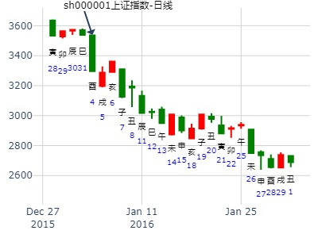
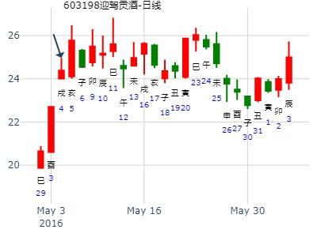
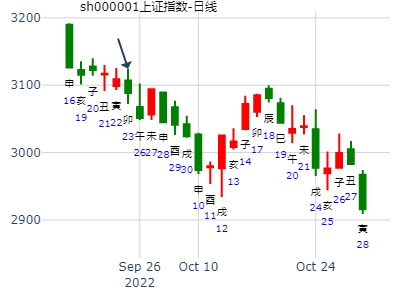
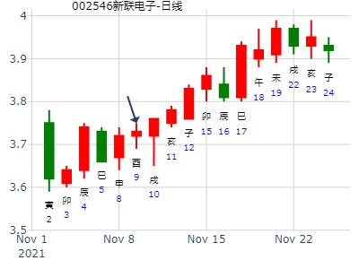

占事：2016年1月大盘走势
卦者： 悟道喜悦 兄弟旬空照样大跌
时间: 2016-01-02
干支: 乙未年戊子月癸未日 (旬空: 申酉 )
晋静卦(游魂)
六神 伏神 本 卦
白虎 ▅▅▅▅▅ 官鬼巳火
腾蛇 ▅▅ ▅▅ 父母未土
勾陈 ▅▅▅▅▅ 兄弟酉金 世
朱雀 ▅▅ ▅▅ 妻财卯木
青龙 ▅▅ ▅▅ 官鬼巳火
玄武 子孙子水▅▅ ▅▅ 父母未土 应
从酉跌到酉。哪怕是子月的酉就开跌，流日重于流月。

晋静卦,网宿科技到六月底
时间: 2023-1-28
干支: 壬寅年癸丑月丙戌日 (旬空: 午未 )
晋静卦
(游魂)
青龙 ▅▅▅▅▅ 官鬼巳火
玄武 ▅▅ ▅▅ 父母未土
白虎 ▅▅▅▅▅ 兄弟酉金 世
腾蛇 ▅▅ ▅▅ 妻财卯木
勾陈 ▅▅ ▅▅ 官鬼巳火
朱雀 ▅▅ ▅▅ 父母未土 应
上证未来12个月走势
拜年卦，今早测股市：
公历起卦时间：2013年2月9日9时30分 (手工指定)
干支：癸巳年 甲寅月 丙午日 癸巳时 （日空：寅卯）
乾宫：火地晋 (游魂)
六神 伏神 本 卦
青龙 官鬼己巳火 ▅▅▅▅▅
玄武 父母己未土 ▅▅ ▅▅
白虎 兄弟己酉金 ▅▅▅▅▅ 世
腾蛇 妻财乙卯木 ▅▅ ▅▅
勾陈 官鬼乙巳火 ▅▅ ▅▅
朱雀 子孙甲子水 父母乙未土 ▅▅ ▅▅ 应
子孙休囚，飞克伏，难引拨；看来也就巳、午月有点涨；卯月也能涨？

晋静卦_600367_红星发展_2015-02-16
时间: 2015-02-16
干支: 乙未年戊寅月癸亥日 (旬空: 子丑 )
晋静卦
(游魂)
白虎 ▅▅▅▅▅ 官鬼巳火
腾蛇 ▅▅ ▅▅ 父母未土
勾陈 ▅▅▅▅▅ 兄弟酉金 世
朱雀 ▅▅ ▅▅ 妻财卯木
青龙 ▅▅ ▅▅ 官鬼巳火
玄武 ▅▅ ▅▅ 父母未土 应
男 占事：600202哈空调明天涨跌
公历起卦时间：2016年2月15日15时30分 (电脑自动)
干支：丙申年 庚寅月 丁卯日 戊申时 （日空：戌亥）
神煞：驿马－巳 桃花－子 日禄－午 贵人－酉，亥
乾宫：火地晋 (游魂)
六神 伏神 本 卦
青龙 官鬼己巳火 ▅▅▅▅▅
玄武 父母己未土 ▅▅ ▅▅
白虎 兄弟己酉金 ▅▅▅▅▅ 世
腾蛇 妻财乙卯木 ▅▅ ▅▅
勾陈 官鬼乙巳火 ▅▅ ▅▅
朱雀 子孙甲子水 父母乙未土 ▅▅ ▅▅ 应
3月上证大盘涨跌卦
占事：3月上证大盘涨跌？
公历起卦时间：2017年2月28日16时38分 (手工指定)
干支：丁酉年 壬寅月 丙戌日 丙申时 （日空：午未）
神煞：驿马－申 桃花－卯 日禄－巳 贵人－酉，亥
乾宫：火地晋 (游魂)
六神 伏神 本 卦
青龙 官鬼己巳火 ▅▅▅▅▅
玄武 父母己未土 ▅▅ ▅▅
白虎 兄弟己酉金 ▅▅▅▅▅ 世
腾蛇 妻财乙卯木 ▅▅ ▅▅
勾陈 官鬼乙巳火 ▅▅ ▅▅
朱雀 子孙甲子水 父母乙未土 ▅▅ ▅▅ 应
主帖标题: 大家一起来：试测上证2.18-2.28何日涨幅最大？
占事：上证2.18-2.28何日涨幅最大？
公历起卦时间：2020年2月22日20时27分 (电脑自动)
干支：庚子年 戊寅月 乙未日 丙戌时 （日空：辰巳）
神煞：驿马－巳 桃花－子 日禄－卯 贵人－子，申
乾宫：火地晋 (游魂)
六神 伏神 本 卦
玄武 官鬼己巳火 ▅▅▅▅▅
白虎 父母己未土 ▅▅ ▅▅
螣蛇 兄弟己酉金 ▅▅▅▅▅ 世
勾陈 妻财乙卯木 ▅▅ ▅▅
朱雀 官鬼乙巳火 ▅▅ ▅▅
青龙 子孙甲子水 父母乙未土 ▅▅ ▅▅ 应
主帖标题: 六爻预测现货黄金至下周四走势
六爻预测现货 黄金现货至下周四走势
公历起卦时间：2022年2月25日9时48分 (在线摇卦)
干支：壬寅年 壬寅月 己酉日 己巳时 （日空：寅卯）
神煞：驿马－亥 桃花－午 日禄－午 贵人－子，申
乾宫：火地晋 (游魂)
六神 伏神 本 卦
勾陈 官鬼己巳火 ▅▅▅▅▅
朱雀 父母己未土 ▅▅ ▅▅
青龙 兄弟己酉金 ▅▅▅▅▅ 世
玄武 妻财乙卯木 ▅▅ ▅▅
白虎 官鬼乙巳火 ▅▅ ▅▅
螣蛇 子孙甲子水 父母乙未土 ▅▅ ▅▅ 应
出生：安 年 性别：女
占事：300068南都电源在2015年三月的走
公历起卦时间：2015年3月2日14时38分 (电脑自动)
干支：乙未年 戊寅月 丁丑日 丁未时 （日空：申酉）
乾宫：火地晋 (游魂)
青龙 官鬼己巳火 ▅▅▅▅▅
玄武 父母己未土 ▅▅ ▅▅
白虎 兄弟己酉金 ▅▅▅▅▅ 世
腾蛇 妻财乙卯木 ▅▅ ▅▅
勾陈 官鬼乙巳火 ▅▅ ▅▅
朱雀 子孙甲子水 父母乙未土 ▅▅ ▅▅ 应
晋卦本是兄弟持世的烂卦，正好寅卯月世爻兄弟衰，财旺而能涨。
测沪深股市今日走势 ：（3月28日）丹霞天然
测沪深股市今日走势 起卦方式：手动摇卦
公历时间：2016年3月28日7时7分 <br>
干 支：丙申年 辛卯月 己酉日 戊辰时 <br>
旬 空：辰巳 午未 (寅卯) 戌亥 <br><br>
乾宫：火地晋（游魂）
六神 伏 神 【本 卦】
勾陈 ▄▄▄▄▄ 官鬼己巳火 <br>
朱雀 ▄▄ ▄▄ 父母己未土 <br>
青龙 ▄▄▄▄▄ 兄弟己酉金 世<br>
玄武 ▄▄ ▄▄ 妻财乙卯木 <br>
白虎 ▄▄ ▄▄ 官鬼乙巳火 <br>
螣蛇 子孙甲子水 ▄▄ ▄▄ 父母乙未土 应
手中一股下周涨跌 6066本周涨跌
手摇卦
公历时间：2020年3月23日10时19分
干 支：庚子年 己卯月 乙丑日 辛巳时
旬 空：辰巳 申酉 戌亥 申酉
神 煞：驿马─亥 桃花─午 日禄─卯 贵人─子，申
中国预测网纳甲六爻排盘
乾宫：火地晋（游魂）
六神 伏 神 【本 卦】
玄武 ▄▄▄▄▄ 官鬼己巳火
白虎 ▄▄ ▄▄ 父母己未土
螣蛇 ▄▄▄▄▄ 兄弟己酉金 世
勾陈 ▄▄ ▄▄ 妻财乙卯木
朱雀 ▄▄ ▄▄ 官鬼乙巳火
青龙 子孙甲子水 ▄▄ ▄▄ 父母乙未土 应
占事：600459贵研铂业明天涨跌， 马云才。
公历起卦时间：2019年4月22日16时11分 (电脑自动)
干支：己亥年 戊辰月 己丑日 壬申时 （日空：午未）
乾宫：火地晋 (游魂)
六神 伏神 本 卦
勾陈 官鬼己巳火 ▅▅▅▅▅
朱雀 父母己未土 ▅▅ ▅▅
青龙 兄弟己酉金 ▅▅▅▅▅ 世
玄武 妻财乙卯木 ▅▅ ▅▅
白虎 官鬼乙巳火 ▅▅ ▅▅
腾蛇 子孙甲子水 父母乙未土 ▅▅ ▅▅ 应
晋静卦,天保基建在四月五月走势
时间: 2023-4-8
干支: 癸卯年丙辰月丙申日 (旬空: 辰巳 )
晋静卦
(游魂)
青龙 ▅▅▅▅▅ 官鬼巳火
玄武 ▅▅ ▅▅ 父母未土
白虎 ▅▅▅▅▅ 兄弟酉金 世
腾蛇 ▅▅ ▅▅ 妻财卯木
勾陈 ▅▅ ▅▅ 官鬼巳火
朱雀 ▅▅ ▅▅ 父母未土 应
康侯用锡马蕃庶，昼日三接。

红牛
迎驾贡酒5.4--5.13走势——乾隆币卦
迎驾贡酒巳月
公历时间：2016年5月4日9时22分
干 支：丙申年 壬辰月 丙戌日 癸巳时
旬 空：辰巳 午未 (午未) 午未
乾宫：火地晋（游魂）
六神 伏 神 【本 卦】
青龙 ▄▄▄▄▄ 官鬼己巳火
玄武 ▄▄ ▄▄ 父母己未土
白虎 ▄▄▄▄▄ 兄弟己酉金 世
螣蛇 ▄▄ ▄▄ 妻财乙卯木
勾陈 ▄▄ ▄▄ 官鬼乙巳火
朱雀 子孙甲子水 ▄▄ ▄▄ 父母乙未土 应

风生水起 占事：大盘巳月
起卦方式：手动摇卦
公历时间：2016年5月5日11时39分
干 支：丙申年 癸巳月 丁亥日 丙午时
旬 空：辰巳 午未 (午未) 寅卯
乾宫：火地晋（游魂）
六神 伏 神 【本 卦】
青龙 ▄▄▄▄▄ 官鬼己巳火
玄武 ▄▄ ▄▄ 父母己未土
白虎 ▄▄▄▄▄ 兄弟己酉金 世
螣蛇 ▄▄ ▄▄ 妻财乙卯木
勾陈 ▄▄ ▄▄ 官鬼乙巳火
朱雀 子孙甲子水 ▄▄ ▄▄ 父母乙未土 应
航天长峰从现在起何月出现20%涨幅？
公历起卦时间：2020年5月20日14时34分 (电脑自动)
干支：庚子年 辛巳月 癸亥日 己未时 （日空：子丑）
神煞：驿马－巳 桃花－子 日禄－子 贵人－卯，巳
乾宫：火地晋 (游魂)
六神 伏神 本 卦
白虎 官鬼己巳火 ▅▅▅▅▅
螣蛇 父母己未土 ▅▅ ▅▅
勾陈 兄弟己酉金 ▅▅▅▅▅ 世
朱雀 妻财乙卯木 ▅▅ ▅▅
青龙 官鬼乙巳火 ▅▅ ▅▅
玄武 子孙甲子水 父母乙未土 ▅▅ ▅▅ 应

主帖标题: 2016年大盘
女 占事：002500
公历起卦时间：2016年6月1日18时1分 (电脑自动排盘)
干支：丙申年 癸巳月 甲寅日 癸酉时 （日空：子丑）
神煞：驿马－申 桃花－卯 日禄－寅 贵人－丑，未
乾宫：火地晋 (游魂)
六神 伏神 本 卦
玄武 官鬼巳火 ▅▅▅▅▅
白虎 父母未土 ▅▅ ▅▅
螣蛇 兄弟酉金 ▅▅▅▅▅ 世
勾陈 妻财卯木 ▅▅ ▅▅
朱雀 官鬼巳火 ▅▅ ▅▅
青龙 子孙子水 父母未土 ▅▅ ▅▅ 应
航天长峰6.10甲申-6.12丙戌五何时 底？
公历起卦时间：2020年6月11日8时59分 (电脑自动)
干支：庚子年 壬午月 乙酉日 庚辰时 （日空：午未）
神煞：驿马－亥 桃花－午 日禄－卯 贵人－子，申
乾宫：火地晋 (游魂)
六神 伏神 本 卦
玄武 官鬼己巳火 ▅▅▅▅▅
白虎 父母己未土 ▅▅ ▅▅
螣蛇 兄弟己酉金 ▅▅▅▅▅ 世
勾陈 妻财乙卯木 ▅▅ ▅▅
朱雀 官鬼乙巳火 ▅▅ ▅▅
青龙 子孙甲子水 父母乙未土 ▅▅ ▅▅ 应
主帖标题: 8月1-5日大盘涨跌卦
占事：8月1-5日大盘涨跌？
公历起卦时间：2011年7月29日16时51分 (手工指定)
干支：辛卯年 乙未月 乙酉日 甲申时 （日空：午未）
神煞：驿马－亥 桃花－午 日禄－卯 贵人－子，申
乾宫：火地晋 (游魂)
六神 伏神 本 卦
玄武 官鬼己巳火 ▅▅▅▅▅
白虎 父母己未土 ▅▅ ▅▅
腾蛇 兄弟己酉金 ▅▅▅▅▅ 世
勾陈 妻财乙卯木 ▅▅ ▅▅
朱雀 官鬼乙巳火 ▅▅ ▅▅
青龙 子孙甲子水 父母乙未土 ▅▅ ▅▅ 应
男 占事：002173千足珍珠下周涨跌
公历起卦时间：2015年7月31日16时46分 (在线摇卦)
干支：乙未年 癸未月 戊申日 庚申时 （日空：寅卯）
神煞：驿马－寅 桃花－酉 日禄－巳 贵人－丑，未
乾宫：火地晋 (游魂)
六神 伏神 本 卦
朱雀 官鬼己巳火 ▅▅▅▅▅
青龙 父母己未土 ▅▅ ▅▅
玄武 兄弟己酉金 ▅▅▅▅▅ 世
白虎 妻财乙卯木 ▅▅ ▅▅
腾蛇 官鬼乙巳火 ▅▅ ▅▅
勾陈 子孙甲子水 父母乙未土 ▅▅ ▅▅ 应
占事：300633开立医疗明天涨跌
公历起卦时间：2017年7月31日16时1分 (电脑自动)
干支：丁酉年 丁未月 己未日 壬申时 （日空：子丑）
神煞：驿马－巳 桃花－子 日禄－午 贵人－子，申
乾宫：火地晋 (游魂)
六神 伏神 本 卦
勾陈 官鬼己巳火 ▅▅▅▅▅
朱雀 父母己未土 ▅▅ ▅▅
青龙 兄弟己酉金 ▅▅▅▅▅ 世
玄武 妻财乙卯木 ▅▅ ▅▅
白虎 官鬼乙巳火 ▅▅ ▅▅
腾蛇 子孙甲子水 父母乙未土 ▅▅ ▅▅ 应
2013年9月大盘涨跌卦
占事：2013年9月大盘涨跌？
公历起卦时间：2013年8月30日15时26分 (手工指定)
干支：癸巳年 庚申月 戊辰日 庚申时 （日空：戌亥）
乾宫：火地晋 (游魂)
六神 伏神 本 卦
朱雀 官鬼己巳火 ▅▅▅▅▅
青龙 父母己未土 ▅▅ ▅▅
玄武 兄弟己酉金 ▅▅▅▅▅ 世
白虎 妻财乙卯木 ▅▅ ▅▅
腾蛇 官鬼乙巳火 ▅▅ ▅▅
勾陈 子孙甲子水 父母乙未土 ▅▅ ▅▅ 应
注释： 此卦例外。申月辰日还能涨。
九戒 占事：下周股票财运?
公历时间：2015年8月15日22时24分????
干 支：乙未年?甲申月?癸亥日?癸亥时
旬 空：辰巳???午未???(子丑)???子丑??
?? 乾宫：火地晋（游魂）
六神? 伏 神 【本 卦】
白虎 ▄▄▄▄▄ 官鬼己巳火
螣蛇 ▄▄??▄▄ 父母己未土
勾陈 ▄▄▄▄▄ 兄弟己酉金 世
朱雀 ▄▄??▄▄ 妻财乙卯木
青龙 ▄▄??▄▄ 官鬼乙巳火
玄武 子孙甲子水 ▄▄??▄▄ 父母乙未土 应
兄弟持世旺。大跌开始。哪怕寅值日照样大跌，卯值日反而涨涨。
出生：没填 年 性别：男 占事：603936博敏电子下周涨跌
公历起卦时间：2016年8月5日15时25分 (电脑自动)
干支：丙申年 乙未月 己未日 壬申时 （日空：子丑）
神煞：驿马－巳 桃花－子 日禄－午 贵人－子，申
乾宫：火地晋 (游魂)
六神 伏神 本 卦
勾陈 官鬼己巳火 ▅▅▅▅▅
朱雀 父母己未土 ▅▅ ▅▅
青龙 兄弟己酉金 ▅▅▅▅▅ 世
玄武 妻财乙卯木 ▅▅ ▅▅
白虎 官鬼乙巳火 ▅▅ ▅▅
腾蛇 子孙甲子水 父母乙未土 ▅▅ ▅▅ 应
注意：未月未日，皆是墓？
测9.26-30 沪市大盘
公历起卦时间：2022年9月20日10时56分 (电脑自动)
干支：壬寅年 己酉月 丙子日 癸巳时 （日空：申酉）
乾宫：火地晋 (游魂)
六神 伏神 本 卦
青龙 官鬼己巳火 ▅▅▅▅▅
玄武 父母己未土 ▅▅ ▅▅
白虎 兄弟己酉金 ▅▅▅▅▅ 世
螣蛇 妻财乙卯木 ▅▅ ▅▅
勾陈 官鬼乙巳火 ▅▅ ▅▅
朱雀 子孙甲子水 父母乙未土 ▅▅ ▅▅ 应
和子日测丑日日卦完全一样，说明大盘还是按照既定的方向在走。

测丑日沪市大盘
公历起卦时间：2022年9月20日10时56分 (电脑自动)
干支：壬寅年 己酉月 丙子日 癸巳时 （日空：申酉）
乾宫：火地晋 (游魂)
六神 伏神 本 卦
青龙 官鬼己巳火 ▅▅▅▅▅
玄武 父母己未土 ▅▅ ▅▅
白虎 兄弟己酉金 ▅▅▅▅▅ 世
螣蛇 妻财乙卯木 ▅▅ ▅▅
勾陈 官鬼乙巳火 ▅▅ ▅▅
朱雀 子孙甲子水 父母乙未土 ▅▅ ▅▅ 应
明天和周五还需注意。
测9.26-30 沪市大盘
公历起卦时间：2022年9月23日15时20分 (电脑自动)
干支：壬寅年 己酉月 己卯日 壬申时 （日空：申酉）
乾宫：火地晋 (游魂)
六神 伏神 本 卦
勾陈 官鬼己巳火 ▅▅▅▅▅
朱雀 父母己未土 ▅▅ ▅▅
青龙 兄弟己酉金 ▅▅▅▅▅ 世
玄武 妻财乙卯木 ▅▅ ▅▅
白虎 官鬼乙巳火 ▅▅ ▅▅
螣蛇 子孙甲子水 父母乙未土 ▅▅ ▅▅ 应

占事：600348阳泉煤业10月会涨不？
起卦方式：手动摇卦
公历时间：2014年10月9日23时27分
干 支：甲午年 甲戌月 甲寅日 甲子时
旬 空：辰巳 申酉 (子丑) 戌亥
乾宫：火地晋（游魂）
六神 伏 神 【本 卦】
玄武 ▄▄▄▄▄ 官鬼己巳火
白虎 ▄▄ ▄▄ 父母己未土
螣蛇 ▄▄▄▄▄ 兄弟己酉金 世
勾陈 ▄▄ ▄▄ 妻财乙卯木
朱雀 ▄▄ ▄▄ 官鬼乙巳火
青龙 子孙甲子水 ▄▄ ▄▄ 父母乙未土 应
测午日沪市大盘
公历起卦时间：2022年10月19日14时39分 (电脑自动)
干支：壬寅年 庚戌月 乙巳日 癸未时 （日空：寅卯）
乾宫：火地晋 (游魂)
六神 伏神 本 卦
玄武 官鬼己巳火 ▅▅▅▅▅
白虎 父母己未土 ▅▅ ▅▅
螣蛇 兄弟己酉金 ▅▅▅▅▅ 世
勾陈 妻财乙卯木 ▅▅ ▅▅
朱雀 官鬼乙巳火 ▅▅ ▅▅
青龙 子孙甲子水 父母乙未土 ▅▅ ▅▅ 应
明天继续跌。
11.10新联电子收盘走势？
公历起卦时间：2021年11月9日18时9分 (电脑自动)
干支：辛丑年 己亥月 辛酉日 丁酉时 （日空：子丑）
神煞：驿马－亥 桃花－午 日禄－酉 贵人－寅，午
乾宫：火地晋 (游魂)
六神 伏神 本 卦
螣蛇 官鬼己巳火 ▅▅▅▅▅
勾陈 父母己未土 ▅▅ ▅▅
朱雀 兄弟己酉金 ▅▅▅▅▅ 世
青龙 妻财乙卯木 ▅▅ ▅▅
玄武 官鬼乙巳火 ▅▅ ▅▅
白虎 子孙甲子水 父母乙未土 ▅▅ ▅▅ 应
注释： 妻财卯木暗动。

保利地产最近三个月行情走势？ 阿晖
起卦时间：2016年12月8日12时51分 (在线摇卦)
干支：丙申年 庚子月 甲子日 庚午时 （日空：戌亥）
神煞：驿马－寅 桃花－酉 日禄－寅 贵人－丑，未
乾宫：火地晋 (游魂)
六神 伏神 本 卦
玄武 官鬼己巳火 ▅▅▅▅▅
白虎 父母己未土 ▅▅ ▅▅
腾蛇 兄弟己酉金 ▅▅▅▅▅ 世
勾陈 妻财乙卯木 ▅▅ ▅▅
朱雀 官鬼乙巳火 ▅▅ ▅▅
青龙 子孙甲子水 父母乙未土 ▅▅ ▅▅ 应
---
主题：保利地产三个月内的走势--铜钱卦 qaqahappy
丙申 庚子 甲子 辛未 (戌亥空)
丙申年±月初十(2016/12/08 14:45:00)
地天泰
玄武 子孙酉金 ∥ 应
白虎 妻财亥水 ∥
腾蛇 兄弟丑土 ∥
勾陈 兄弟辰土 ／ 世
父母巳火：朱雀 官鬼寅木 ／
青龙 妻财子水 ／
财值月，容易立马出高点。火地晋，兄弟持世没好卦。酉日兄弟值班持世大跌。
辰日合生兄弟，又跌。（应在下卦地天泰兄弟持世大跌）